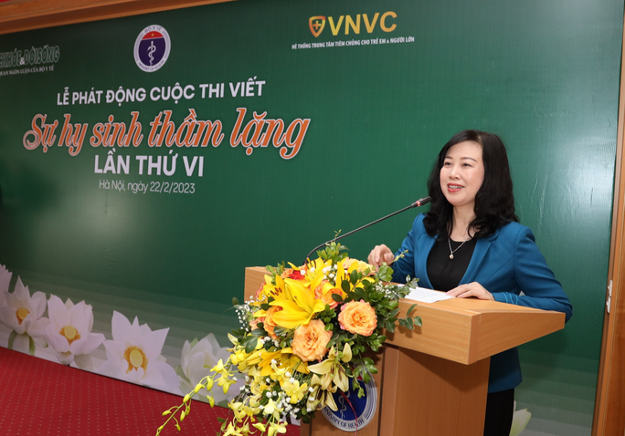

Tôn vinh những cống hiến của y bác sĩ, nhân viên y tế
Thứ hai, 15/8/2023, 12:10 (GMT+7)
Sáng 22-2, tại lễ phát động cuộc thi "Sự hy sinh thầm lặng" lần thứ 6, Bộ trưởng Bộ Y tế Đào Hồng Lan cho biết sứ mệnh của ngành y tế là chăm lo, chăm sóc, bảo vệ nâng cao sức khỏe nhân dân. Đội ngũ y bác sĩ kể cả trong công lập và ngoài công lập lên đến hơn nửa triệu người đang không quản ngày, đêm, sớm, tối thực hiện nhiệm vụ của mình từ trung ương cho đến địa phương, đến tận các thôn bản vùng sâu, vùng xa. Những vất vả, hy sinh của lực lượng y bác sĩ xứng đáng được xã hội ghi nhận và cổ vũ. Chính vì vậy, tôn vinh các thầy thuốc, y bác sĩ là điều vô cùng cần thiết, không chỉ động viên mà còn để nhân lên các tấm gương điển hình của ngành y, khuyến khích và phát huy bản chất tốt đẹp, qua đó làm đẹp thêm hình ảnh người chiến sĩ áo trắng trong tâm trí mỗi người dân.
Bộ trưởng Bộ Y tế cho biết "Sự hy sinh thầm lặng" là cuộc thi viết được Báo Sức khỏe & Đời sống, Cơ quan ngôn luận của Bộ Y tế, phát động lần đầu tiên vào năm 2010. Cuộc thi cũng là sự động viên ý nghĩa đối với các y, bác sĩ, dược sĩ, lương y, cán bộ dân số, các chuyên gia y tế trong nhiều lĩnh vực, chuyên ngành, chuyên khoa, các thầy thuốc dân y và thầy thuốc phục vụ trong lực lượng vũ trang. "Ngành y là một ngành rất đặc biệt, đặc thù, một ngành rất cao quý nhưng để tự đội ngũ cán bộ y tế nói về chính bản thân mình thì rất khó. Sự hy sinh cống hiến của đội ngũ y bác sĩ thường được phác họa qua những tác phẩm báo chí là chính. Những bài báo đã giúp xã hội phần nào hiểu, thông cảm chia sẻ với những khó khăn vất vả của cán bộ ngành y tế"- bà Lan chia sẻ. Bộ trưởng cũng mong những khó khăn, vất vả của ngành y có được sự chia sẻ, động viên về tinh thần để qua đó sẽ biến thành động viên về chính sách tháo gỡ những khó khăn vướng mắc của ngành y tế trong quá trình triển khai nhiệm vụ. Mục đích là xây dựng hệ thống y tế phát triển bền vững, có đội ngũ y bác sĩ đáp ứng nhu cầu chăm sóc sức khỏe của người dân cả về y đức, chuyên môn, thái độ phục vụ. Ông Trần Tuấn Linh, Tổng Biên tập Báo Sức khỏe & Đời sống, Trưởng ban tổ chức, cho biết cuộc thi “Sự hy sinh thầm lặng” lần này không chỉ giới hạn ở bài tham gia dự thi mà mở rộng đối với thể loại báo viết đăng trên báo in và báo điện tử của tất cả các cơ quan báo chí trung ương và địa phương. Đặc biệt, đối với báo điện tử, Ban tổ chức khuyến khích các thể loại longform, eMagazine, multimedia với hình thức thể hiện phong phú, hấp dẫn. Chủ đề viết về các tấm gương, sự hy sinh của các thầy thuốc, nhân viên y tế, các giáo sư, bác sĩ, dược sĩ, lương y, cán bộ dân số, nhân viên y tế, thôn bản... ở mọi miền đất nước, trong đó, giải đặc biệt trị giá 80 triệu đồng. Thời gian nhận bài dự thi từ ngày phát động cuộc thi đến hết ngày 31-12-2023.
Giới thiệu
Tell Ur Mom II - Winno ft. Heily「Cukak Remix」/ Audio Lyrics Video
Follow Me

Liên hệ
Điện thoại: 0987654321
Email: web1013@dinhnt.com